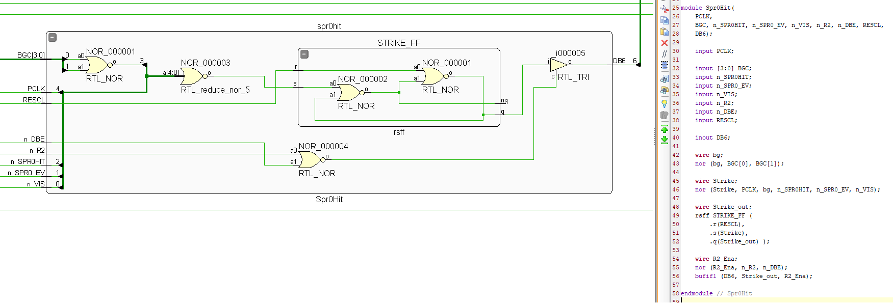
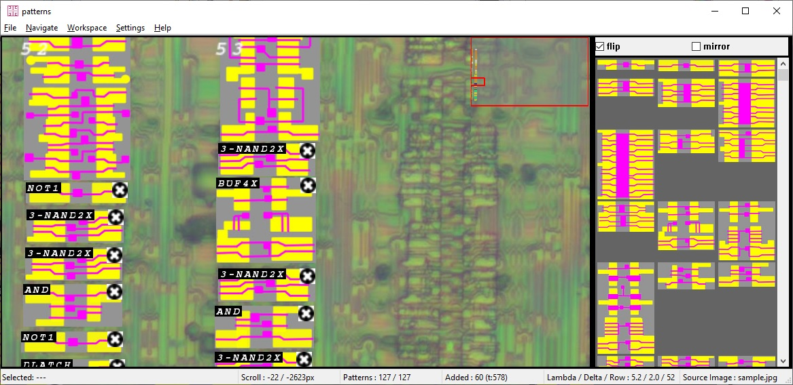
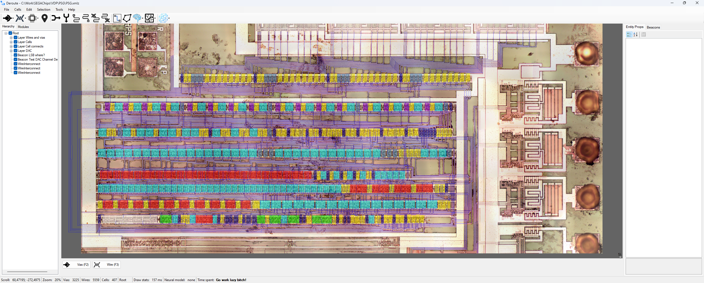
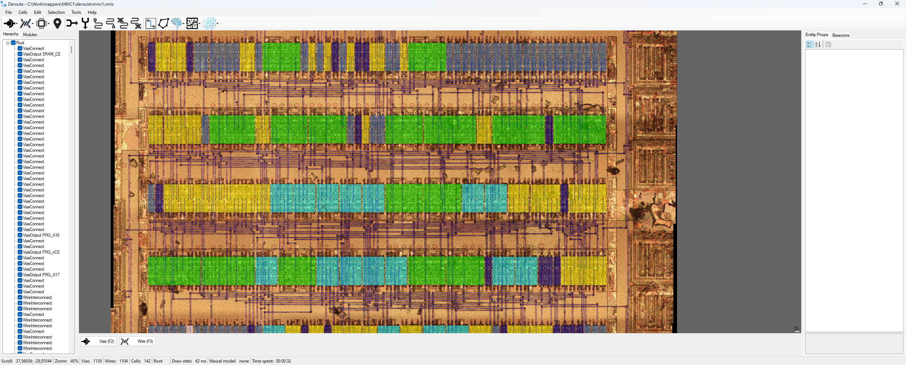

4. Сшивка

Общая методичка: процесс исследования чипов в домашних условиях, собранный из опыта проектов emu-russia: breaks, SEGAChips, dmgcpu, Deroute, mappers, SovietChips, ula, psxcpu, Patterns. Начали новый чип — идите по шагам.





specs/workflow.md (RU) specs/workflow_en.md (EN) methods.md hf.md gds.md